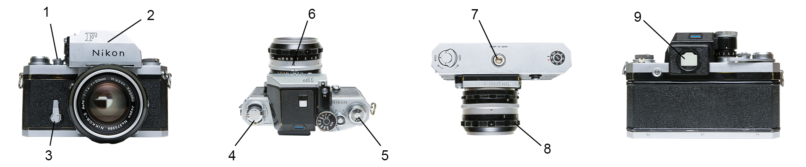

TUTVU LÄHEMALT PÕNEVATE AJALOOLISTE FOTOAPARAATIDEGA
1880. aastad
×
Bergeri reisikaamera
Sarnase Revalis (Tallinnas) valmistatud fotokaameraga pildistas arvatavasti ka linna kõige kuulsam fotograaf Charles Borchardt (1834-1892)
Fotomuuseum, TLM KF 364

1 - lõõts | 2 - objektiiv | 3 - mattklaas | 4 - avarõngas | 5 - objektiiviplaadi kinnistuskruvi | 6 - statiivikeere
1920. aastad
×
6-objektiiviline kiirpildiaparaat
Kiirfotograaf Jaan Ennula patenteeritud fotokaamera
1 - valguskindel varrukas | 2 - reprodutseerimisalus | 3 - objektiiviava | 4 - piiluava | 5 - fokusseerimisvarras | 6 - mattklaas
1960. aastad
×
Peegelkaamera NIKON F
Selle fotokaameraga tegi fotokunsti Peeter Tooming (1939-1997)
Fotomuuseum, TLM KF 775
1 - päästik | 2 - eemaldatav pentaprisma (peeglite süsteem) | 3 - iseavaja | 4 - filmi tagasikerimisketas | 5 - filmi edasikerimisketas | 6 - objektiiv | 7 - statiivikeere | 8 - fokusseerimisrõngas | 9 - pildiotsija
×
Kiirpiltnik Jaan Ennula fotoaparaadi patent
Kiirfotograafide Jaan Kärsmanni (Ennula) ja Eduard Viidase päevapildi- ja kopeerimisaparaadi patent, aparaadi kirjeldus ja joonised. 24. aprill, 1924
Fotomuuseum, TLM Df 1989